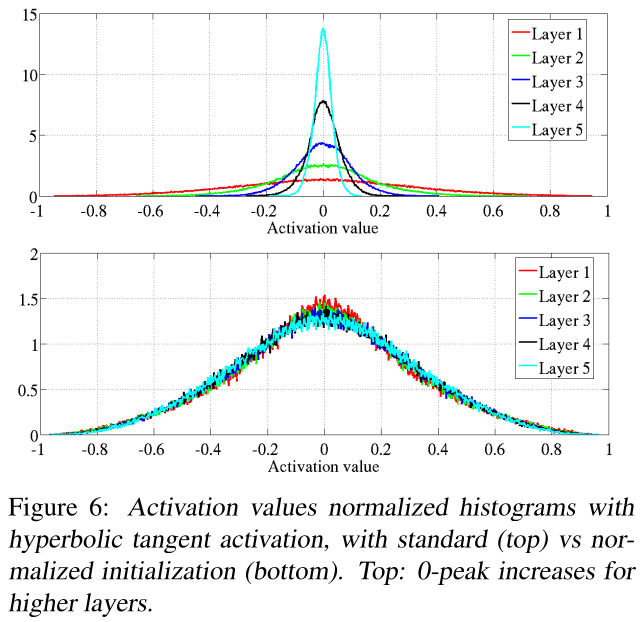

<?xml version = "1.0" encoding = "UTF-8"?>
<xsl:stylesheet version = "1.0" xmlns:xsl = "http://www.w3.org/1999/XSL/Transform">
<xsl:template match = "/"> 
<!doctype html>
<html lang="en">

	<head>
		<meta charset="utf-8">
    
		<title>Lecture 1 - NNML 2020</title>
		<meta name="description" content="NNML">
		<meta name="author" content="Emre Neftci">

		<meta name="apple-mobile-web-app-capable" content="yes">
		<meta name="apple-mobile-web-app-status-bar-style" content="black-translucent">

		<link rel="stylesheet" href="dist/reset.css">
		<link rel="stylesheet" href="dist/reveal.css">
		<link rel="stylesheet" href="nmilab.css">

		<!-- Theme used for syntax highlighted code -->
		<link rel="stylesheet" href="plugin/highlight/monokai.css">

    <script src="jquery.js"></script> 
    <script> 
    $(function(){
      $("#sdlides").load("slides_1_inner.html"); 
    });
    </script> 

  </head>    

	<body>
		<div class="reveal">
			<div class="slides">

<section data-markdown data-vertical-align-top data-background-color=#B2BA67><textarea data-template>
    <h1> Neural Networks' "Tricks of the Trade"  <br/> </h1>

</textarea></section>


<section data-markdown><textarea data-template>
## Regularization

Regularization can improve generalization error. The simplest regularization technique is to add a term to the cost:
$$
C_{total} = C_{task} + \lambda R(W)
$$

For example:
- L2 Regularization: $R(W) = \sum_{ij} W_{ij}^2$
<pre><code class="Python" data-trim data-noescape>
opt = torch.optim.Adam(net.parameters(), lr=1e-3, weight_decay=1e-3)
</code></pre>
- L1 Regularization: $R(W) = \sum_{ij} |W_{ij}|$
<pre><code class="Python" data-trim data-noescape>
l1_loss = 0
for param in net.parameters():
    l1_loss += torch.sum(torch.abs(param))
loss_total = loss + l1_loss
</code></pre>


</textarea></section>

<section data-markdown><textarea data-template>
## Regularization: Dropout

In the forward pass, randomly set the output of some neurons to zero. The probability of dropping is generally 50%


<p class=ref>Srivastava et al, Dropout: A simple way to prevent neural networks from overfitting, JMLR 2014</p>

- Dropout is used as a layer placed *after* activation functions
<pre><code class="Python" data-trim data-noescape>
torch.nn.DropOut(.5)
</code></pre>

</textarea></section>

<section data-markdown><textarea data-template>
## Regularization: Dropout

Why is this a good idea?


<p class=ref>Li et al. CS231n Stanford.</p>

- Dropout can be shown to have a regularizing effect (e.g. improves generalization error)
</textarea></section>

<section data-markdown><textarea data-template>
## Regularization: Dropout at Test Time

At test time, units are generally not dropped out, but activities are scaled by the probability. 

- The dropout layer can do this automatically, but you must explicitely set the network into training and evaluation mode:

<pre><code class="Python" data-trim data-noescape>
net.train() #network is in training mode, dropout is applied
... #do training
net.eval() #network is in testing mode, dropout is disabled, activities are scaled
</code></pre>

- But not always! Keeping dropout during test time may allow some probabilistic inference, see <a href='https://www.nature.com/articles/s41467-022-30305-8'>Neural sampling machine with stochastic synapse allows brain-like learning and inference</a>
</textarea></section>

<section data-markdown><textarea data-template>
<h2> How to Use Dropout </h2>

<ul>
  <li /> Use dropout between fully hidden layers outputs or the output of a group of hiddens layers at a rate of .5 for effective regularization
  <pre><code class="Python" data-trim data-noescape>
  dropout = torch.nn.Dropout(0.5) 
  dropout(x)
  </code></pre>
  <li /> In convolutional networks, use 2D dropout to drop the entire feature 
  <pre><code class="Python" data-trim data-noescape>
  dropout2d = torch.nn.Dropout2d(0.5) 
  dropout2d(x)
  </code></pre>
  <li /> Some use low rate (.25) dropout at the input
  <li /> Don't use dropout after the output layer
  <li /> If still overfitting, use weight decay (L2 norm). If sparse activity is desired, use L1 norm
</ul>
</textarea></section>

<section data-markdown><textarea data-template>
    <h2>Weight Initialization</h2>
    
    <p class=ref> Glorot and Bengio, 2010 </p>
<ul>
  <li /> The parameters in a neural netwok must be initialized to some value. Setting all values to zero can be problematic, and should be avoided.
  <li /> Some randomness is necessary to "break symmetries". The magnitude of the randomness must be carefully adjusted so the activities do not saturate/die across the network.
  <li class=fragment /> PyTorch layers generally use initialization that is dependent on the layer sizes. Generally it uses the "Xavier Glorot initialization" 
    $W \sim U[-\frac{\sqrt{6}}{N^{in} + N^{out}}, \frac{\sqrt{6}}{N^{in} + N^{out}}]$
</ul>
</textarea></section>

<section data-markdown><textarea data-template>
<h2> How to Use Weight Initialization </h2>
<ul>
  <li /> If using standard layers, use the default settings!
  <li /> On custom layers, try using the Xavier (Glorot) method, if using Relu, try using $U[-\frac{\sqrt{2}}{N},\frac{\sqrt{2}}{N}]$
    <p class=ref>https://arxiv.org/abs/1502.01852</p>
    <li /> In some cases, data-driven initalization may help, see <a href="https://arxiv.org/abs/1511.06422"> All you need is a good init </a>
</ul>
</textarea></section>


<section data-markdown><textarea data-template>
    <h2>Normalization</h2>
    <ul>
      <li /> If preactivations drift during training, it is costly for subsequent layers to adapt to that drift.
        
      <li /> Several normalization techniques exist, we will focus on the one use the most commonly (Batch Norm).
    </ul>
</textarea></section>

<section data-markdown><textarea data-template>
    <h2>Batch Normalization</h2>
    <ul>

      <li /> Batch Normalization (BN) is one solution to this problem. BN transforms the activations at a given layer x according to:
    $$
  \mathrm{BN}(\mathbf{x}) = \mathbf{\gamma} \odot \frac{\mathbf{x} - \hat{\mathbf{\mu}}}{\hat\sigma} + \mathbf{\beta}</div>
    $$
    where $\hat{\mathbf{\mu}}$ is the mean over the batch, $\hat\sigma$ is the standard deviation over the batch. $\gamma$ and $\beta$ are trainable scaling and offsets parameters.
      <li class=fragment data-fragment-index="2" /> Typically a noise term is added to the calculation of $\hat\sigma$. This noise term prevents a division by zero and also acts as a regularizer
      <li class=fragment data-fragment-index="3"/> BN speeds up the training in large networks
      <li class=fragment data-fragment-index="3"/> BN is applied right before the application of the activation function
    </ul>
</textarea></section>

<section data-markdown><textarea data-template>
    <h2>Use BN in Feed Forward Neural Networks</h2>

<pre><code class="Python" data-trim data-noescape>
def __init__(self):
  super(Net, self).__init__()
  self.layer1 = torch.nn.Linear(128,64)
  self.layer1_bn =nn.BatchNorm1d(64)
  ...

def forward(self, x):
  y = self.layer1(x)
  y = self.layer1_bn(y)
  y = torch.relu(y)
  ...
</code></pre>

</textarea></section>

<section data-markdown><textarea data-template>
    <h2>Use BN in Convolutional Neural Networks</h2>

<pre><code class="Python" data-trim data-noescape>
def __init__(self):
  super(Net, self).__init__()
  self.layer1 = torch.nn.Conv2d(3,32,3,1)
  self.layer1_bn =nn.BatchNorm2d(32)
  ...

def forward(self, x):
  y = self.layer1(x)
  y = self.layer1_bn(y)
  y = torch.relu(y)
  ...
</code></pre>
</textarea></section>

<section data-markdown><textarea data-template>
    <h2>Deep Neural Networks for Vision: Convolutional Neural Networks</h2>
    <ul>
      <li />Nearly all state-of-the-art algorithms in AI/ML have a deep learning component, often in the form of structured neural networks known as Convolutional Neural Networks
    </ul>

    
    <p class=ref>LeCun_etal98</p>
  <p class=pl>CNNs can learn end-to-end and outperform humans on certain recognition tasks</p>
  <p class=pl>CNNs are generally not the best application for memristive crossbar arrays (Why?)</p>
</textarea></section>


      </div></div>

		<script src="dist/reveal.js"></script>
		<script src="plugin/zoom/zoom.js"></script>
		<script src="plugin/notes/notes.js"></script>
		<script src="plugin/math/math.js"></script>
		<script src="plugin/search/search.js"></script>
		<script src="plugin/markdown/markdown.js"></script>
		<script src="plugin/highlight/highlight.js"></script>
		<script>
			// More info about initialization & config:
			// - https://revealjs.com/initialization/
			// - https://revealjs.com/config/
			Reveal.initialize({
				hash: true,
        width: 1280,
        height: 720,
        margin: 0.0,
        navigationMode: 'grid',
        transition: 'fade',
				controls: true,
				progress: true,
				center: true,
				hash: true,
				plugins: [RevealMarkdown, RevealHighlight, RevealNotes, RevealMath.MathJax2],
        math: {
              mathjax: 'https://cdnjs.cloudflare.com/ajax/libs/mathjax/2.7.0/MathJax.js',
              config: 'TeX-AMS_HTML-full', 
              TeX: { Macros: { Dp: ["\\frac{\\partial #1}{\\partial #2}",2] }}
            },
			});
		</script>
	</body>
</html>
